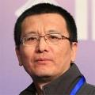

People > Faculty
Fa-Long Luo
|  | Fa-Long Luo, Ph.D., IEEE Fellow Affiliate Professor: University of Washington Chief Scientist: Micron Technology, Inc. |
| Website: https://www.ece.uw.edu/people/fa-long-luo/
E-mail:falong@uw.edu E-mail: f.luo@ieee.org E-mail: falongluo@micron.com |
Biosketch
|
As the Chief Scientist of Micron Technology Inc., USA and IEEE Fellow, Dr. Fa-Long Luo is now also an Affiliate Professor of Electrical Engineering Department at University of Washington in Seattle. He has 35 years academic, industry and research experience with emphasis on the translation of adaptive signal processing techniques to practical applications and commercial products related to multimedia, wireless communications and digital broadcasting. Currently, his research interests are mainly in the optimal silicon convergence of application algorithm, computing platform and memory access in terms of high performance, low power and small die-size. The techniques that he is involved mainly include signal processing, wireless networks, reconfigurable computing and tensor access memory (TAM). Including his well-received books: "Applied Neural Networks for Signal Processing" (1997, Cambridge University Press) and "Signal Processing for 5G: Algorithms and Implementations" (2016, Wiley-IEEE), Dr. Luo has published 6 books and more than 100 technical papers in the related fields. Dr. Luo has also contributed 79 patents/inventions which have successfully resulted in a number of new or improved commercial products in massive production. Fa-Long Luo has served the Chairman of IEEE Industry DSP Standing Committee and Technical Board Member of IEEE Signal Processing Society. He has also served as an Associate Editor of "IEEE Access," "IEEE Internet of Things Journal," "St. Petersburg State Polytechnical University Journal of Computer Science, Telecommunication and Control Systems," and the founding Editor-in-Chief of "International Journal of Digital Multimedia Broadcasting." Dr. Luo has been extensively involved in related international standardization activities. He led more than fifty worldwide experts to have edited the first application handbook: "Mobile Multimedia Broadcasting Standards: Technology and Practice" (Springer, 2008). His book: "Digital Front-End in Wireless Communications: Circuits and Signal Processing" was published by Cambridge University Press in 2011and considered the first complete guide for the related chip design and implementation. As a principal investigator or participant, he has conducted nearly thirty research projects, most of which have been funded, because of their importance and excellence, by related government agencies such as National Natural Science Foundation of China, German Research Foundation, US Navy and Natural Science and Engineering Council of Canada, respectively. He was also awarded the Fellowship by the Alexander von Humboldt Foundation of Germany. Selected HonorsIEEE Fellow (2016) Selected ServicesTC Chair: Industry DSP Technology Standing Committee of IEEE SPS (2011- 2012 and 2017-2018). Selected Publications[Book 6] Fa-Long Luo, "Machine Learning for Future Wireless Communications ", Wiley and IEEE, November 2019, ISBN: 9781119562252. [Book 5] Fa-Long Luo and Charlie Zhang, "Signal Processing for 5G: Algorithms and Implementation," John Wiley and IEEE, October, 2016, ISBN: 978-1119116462. Translated into Chinese version in 2018. [Book 4] Fa-Long Luo, "Digital Front-End in Wireless Communication and Broadcasting: Circuits and Signal Processing," Cambridge University Press, September, 2011, ISBN: 978-1107002135. [Book 3] Fa-Long Luo: Mobile Multimedia Broadcasting Standards, "Technology and Practice," Springer Verlag, November 2008, ISBN: : 978-1441946126. [Book 2] Fa-Long Luo and Yanda Li, "Neural Networks and Signal Processing," the National Electronics Industry Press of China, Beijing, 1993, ISBN: 10179317. [Book 1] Fa-Long Luo and Rolf Unbehauen, "Applied Neural Networks for Signal Processing," Cambridge University Press, the first print in 1997, the second print in 1998, the third print in 1999. Fa-Long Luo, "Signal Processing for 5G: an Overview," ZTE Communications: an International Journal, Vol. 13, No.1, pp.31-39, 2015. Fa-Long Luo, Ward Williams, Raghuveer M. Rao, Rajesh Narasimha, Marie-Jose Montpetit, "Trends in signal processing applications and industry technology," IEEE Signal Processing Magazine, Vol.29, No.1, pp.172-174, 2012. Fa-Long Luo and Arye Nehorai, "Recent developments in signal processing for digital hearing aids," IEEE Signal Processing Magazine, Vol.23, No.5 pp.103-106, 2006. T. Ndjounteche, F.-L. Luo and R. Unbehauen, "A high-frequency double-sampling second Delta-Sigma modulator," IEEE Trans. on Circuits and Systems, Part. 2, Vol.52, No. 12, pp.841-845, 2005. Bernard Widrow and Fa-Long Luo, "Microphone array for hearing devices: an overview," Speech Communication, Vol.39, N0.1, pp.139-146, 2003. Fa-Long Luo, Jun Yang, Chaslav Pavlovic and Arye Nehorai, "Adaptive null-forming for nearby microphones, " IEEE Trans. on Signal Processing, Vol.50, No.7, pp.1583-1590, 2002. F.L. Luo, R.Unbehauen and T. Ndjounteche, ``Unsupervised learning of higher-order statistics," Neural Processing Letters, Vol.9, No.3, pp.249-255, 1999. F.L. Luo and R. Unbehauen, ``Neural networks for the eigen-structure based signal processing," IEEE Signal Processing Magazine, Vol.14, No.6, pp.38-39, 1997. F.L. Luo and R.Unbehauen, ``A minor subspace analysis algorithm," IEEE Transactions on Neural Networks, Vol.8, No.5, pp.1149-1155, 1997. F.L.Luo and Y.D.Li, "Real-time computation of the eigenvector corresponding to the smallest eigenvalue of a positive definite matrix," IEEE Trans. on Circuits and Systems, Pt.I, Vol.41, No.8, pp.550-553, 1994. F.L.Luo and Z.Bao, "Real-time neural computation of maximum likelihood criterion for bearing estimation problems," Neural Networks, Vol.5, No.5, pp.765-769, 1992. F.L. Luo, Z.Bao and X.P. Zhao, "Real-time implementation of propagator bearing estimation method by use of a neural network," IEEE Journal of Oceanic Engineering, Vol.17, No.4, pp.320-325, 1992. F.L Luo and J.Yang, "Bound on inputs to neurons of continuous variable Hopfield neural network," IEE Proceedings, Pt.G, Vol.138, No.6, pp.671-672, 1991. Selected PatentsFa-Long Luo, Tamara Schmitz, Jaime Cummins, and Jeremy Chritz, " Embedded Homogeneous and Heterogeneous Single Chip Solution for 5G Wireless," United States Patent (Granted on 04/10/2018, Patent No.: 9,942,074). Fa-Long Luo and Bob Uvacek, "IC for Universal Computing with Near Zero Programming Complexity," United States Patent (Granted on 09/20/2005, Patent No.: 6,947,916). Fa-Long Luo, "System for Frequency Domain Scaling for Discrete Cosine Transform (DCT)," United States Patent (Granted on 02/12/2008, Patent No.: 7,330,866). Fa-Long Luo, Jun Yang, Brent Edwards, Nick Michael, "An Adaptive Microphone Array System with Preserving Binaural Cues," European Patent (Granted on 11/23/2011, Patent No.: EP 1,305,975). Fa-Long Luo, Jun Yang, Chas Pavlovic and Arye Nehorai, "A Two-Stage Adaptive Feedback Cancellation Scheme for Hearing Instruments," United States Patent (Granted on 06/22/2004, Patent No.: 6,754,356). Fa-Long Luo, "Method and Apparatus for an Adaptive Binaural Beamforming System," United States Patent (Granted on 01/03/2006, Patent No.: 6,983,055). Fa-Long Luo, "A Low-complexity Scheme for Color Space Conversion and Down-sampling in Image Codecs," United States Patent (Granted on 04/06/2010, Patent No.: 7,693,326). Fa-Long Luo, "Method and System for Providing An Excitation-Pattern Based Audio Coding Scheme," United States Patent (Granted on 11/10/2009, Patent No.: 7,617,100). Fa-Long Luo and David Chou, "Equalization for DMT and OFDM Communication Systems" United States Patent (Granted on 10/07/2008, Patent No.: 7,433,398). Fa-Long Luo, Zhenyu Wei, Xiang Wan and Norman Hu, "Method and System for Providing Stereo-Channel Based Multi-Channel Audio Coding," United States Patent (Granted on 10/18/2011, Patent No.: 8,041,041 ). Fa-Long Luo, Brend Edwards Jun Yang, Nick Michael, "FFT Based Technique for Adaptive Directionality of Dual Microphone," United States Patent (Granted 12/23/2003, Patent No.: 6,668,062). |